Building Your Own Voice Assistant for Home Assistant
Smart Home Edge Systems
(smart-home-edge-systems.us)
Figure 1: They are watching you!
Barnes Home Lab
Table of Contents
No table of contents entries found.
🛠️ Index of Source Code Blocks
No table of figures entries found.
📸 Index of Pictures
Figure 2: They are watching you! 1
**
Building Your Own Voice Assistant for Home Assistant
by
in Smart House
3D Printing Arduino Hardware Smart House
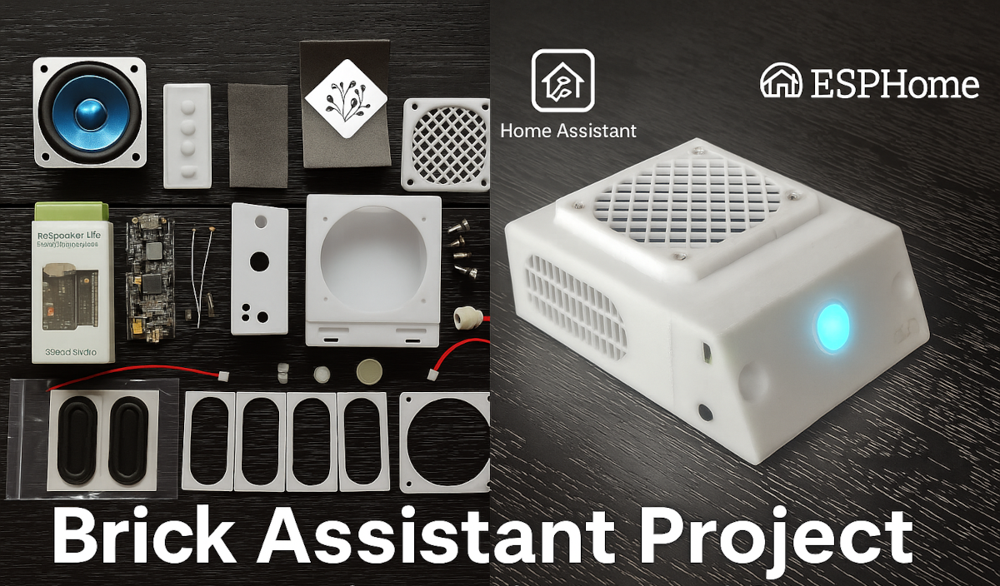
In this article, I’ll share my own experience creating a custom voice assistant device for Home Assistant using the ReSpeaker Lite Voice Assistant Kit from SeeedStudio. I’ll guide you step-by-step, making the process easy to follow and implement. Whether you’re looking to effortlessly control your smart home, add hands-free functionality to your existing setup, or replace proprietary voice assistants like Google or Amazon (as I did), this guide should help you achieve your goals.
I’ll provide my custom firmware version configuration tailored for reliable operation with Home Assistant, along with detailed instructions on how to flash the device. Additionally, you’ll gain access to a specially designed enclosure ready for 3D printing, ensuring your finished product is attractive and seamlessly integrated into your home environment.
Throughout this guide, you’ll find a comprehensive list of necessary components and practical tips drawn from my personal experience. By following these instructions, you can successfully assemble and configure a fully functional voice assistant, significantly enhancing your smart home experience!
Main Features of the Device
Before diving into the detailed setup and assembly process of our custom voice assistant, let me highlight the main capabilities of both the device itself and the functionalities available through Home Assistant:
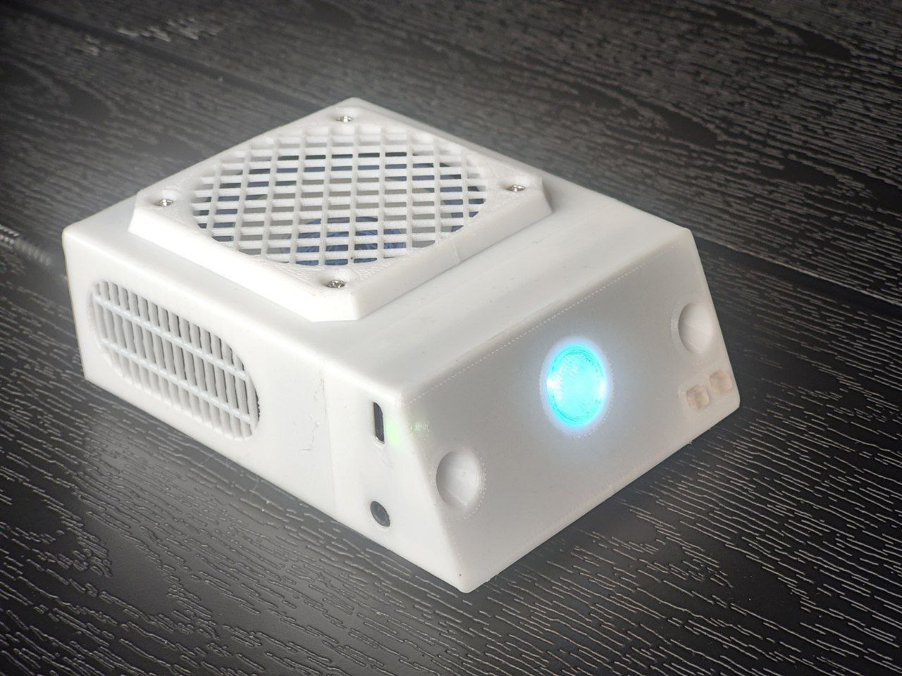
The Brick AssistantDevice based on the SeeedStudio ReSpeaker Lite Voice Assistant Kit (complete specifications available here).
EspHome firmware with 16-bit 48kHz audio output for enhanced audio quality.
Fully sealed compact 3D printed enclosure featuring a 5W (2 or 2.5 inch) speaker and 2 passive radiators for improved sound quality.
2 multi-functional hardware buttons for volume control, microphone mute, media playback control, and more.
Parabolically shaped microphone openings to enhance sound concentration and improve microphone sensitivity and accuracy (in theory).
All ports available on the ReSpeaker Lite board are externally accessible, including a 3.5mm line-out jack for connecting external speakers.
Additional USB-C connector on the back of the device for convenient cable management.
Voice control for all Home Assistant – connected devices and activation of automations through voice commands.
Three selectable wake words from the Home Assistant interface: “Ok Nabu,” “Hey Jarvis,” and “Hey Mycroft.”
Voice-activated timer.
“Stop” voice command to halt timer notifications or voice announcements.
Compatibility with various Speech-to-Text and Text-to-Speech services available within Home Assistant.
Local speech recognition using open-source services like Whisper or Vosk, ensuring your voice data is processed locally without sending audio recordings to external cloud services.
Integration with AI chatbots such as ChatGPT, Gemini, Ollama, DeepSeek, etc., allowing the use of either online API services or locally hosted AI models.
RGB LED indicator available to Home Assistant for custom automation.
Media playback capabilities for music, radio, and voice notifications.
Siren mode suitable for home security or emergency alerts, such as CO2, smoke, or water leak detections.
Automatic firmware update for the XMOS XU316 audio chipset if necessary.
Prerequisites
Home Server running Home Assistant: Before building your voice assistant, you should already have a home server set up, for example using a Raspberry Pi 4 or 5 with at least 4GB RAM. However, I highly recommend 8GB or even 16GB RAM if you want to run advanced voice recognition AI models locally. Your server should have Home Assistant installed—preferably the full Home Assistant OS rather than a Docker container. While using Home Assistant as a Docker container is possible, it lacks official add-on support and requires additional effort, so this guide won’t cover that method. If you’re currently exploring suitable home server configurations for Home Assistant and other useful services, I recommend considering a mini PC based on the Intel N100 processor rather than a Raspberry Pi. I’m currently using such a configuration myself and have been very satisfied. Here’s a brief overview of my current home server setup (link).
Access to a 3D printer: To have a complete and user-friendly device, you’ll need to 3D print an enclosure. I will gladly share my enclosure design with you.
Basic DIY and soldering skills: You’ll need basic DIY skills and the ability to solder wires to device contacts on a PCB.
Required Components
Below is the complete list of components I used for assembling my version of the voice assistant. I recommend closely following this list to ensure maximum compatibility with my 3D-printed enclosure design and ease of assembly (affiliate links provided):
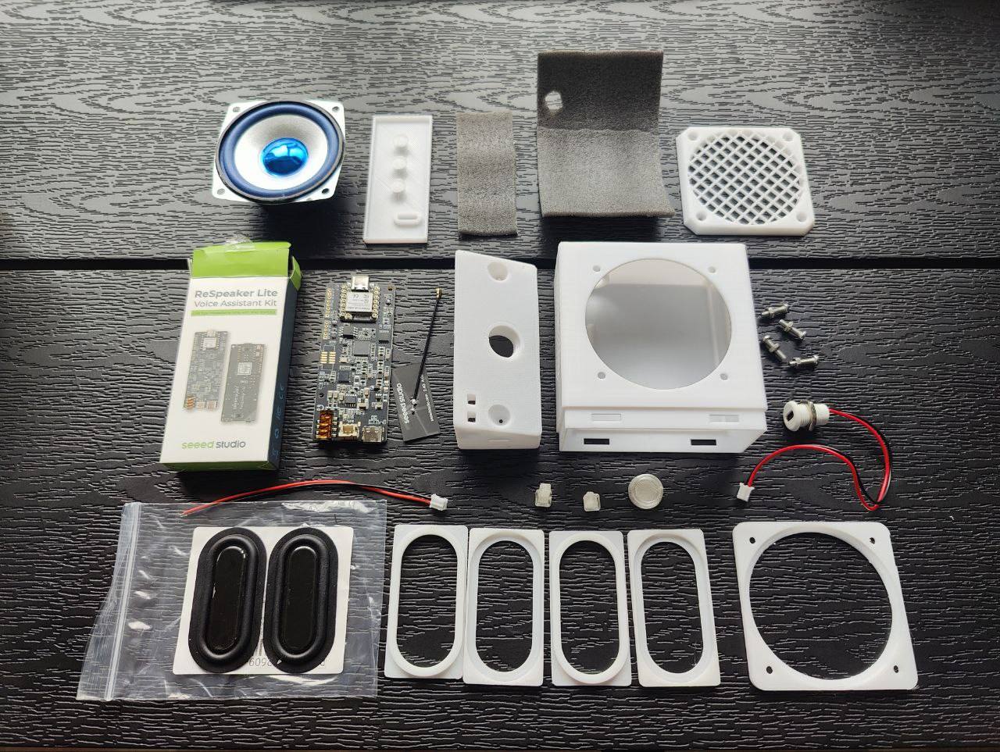
The Brick Assistant ComponentsReSpeaker Lite Voice Assistant Kit – choose the version with a pre-soldered ESP32 module.
SeeedStudio official website (try discount coupons: 2TCCEW22, 4W300G1Y, RSDK6KSE)
SeeedStudio store on AliExpress (sometimes cheaper depending on your location and shipping costs)
Oval Passive Radiators 30x60mm (2 pcs) – AliExpress: link 1, link 2;
One 2-pin USB-C connector – AliExpress: link 1, link 2; choose one with a PH2.0 female connector.
One pair of 2-pin JST 2.0mm PH2.0 connectors with wires (a female for the speaker and a male for power) – AliExpress: link 1, link 2
M3 screws with nuts (4 pcs) – length between 8-12mm; Phillips rounded head recommended. Available in local stores or on AliExpress: link 1, link 2, link 3
2-inch 4ohm 5W Speaker – AliExpress: link 1, link 2, link 3; select the version with square mounting.
or 2.5-inch 4ohm 5W Speaker – AliExpress: link 1, link 2 select the version with square mounting.
Firmware Installation
Once you’ve received your ReSpeaker-lite Voice
Assistant Kit, you can start by installing the firmware,
connecting it to Home Assistant, and testing the voice
assistant functionality before moving on to the
enclosure assembly.
Disclaimer: The following steps are
performed at your own risk based on your personal
experience. I provide no guarantees and share only the
knowledge I’ve gained at the time of writing this guide.
Your experience may differ due to ongoing updates and
changes in the ESPHome framework, Home Assistant,
firmware for the XMOS audio chipset, and other related
components.
About Firmware Options
If you search the internet for available firmware examples for the ReSpeaker-lite Voice Assistant Kit based on ESPHome, you’ll find various versions created by different authors. Most of these firmware configurations use a 16 kHz audio sampling rate. This rate is sufficient for basic voice commands and notifications, but if you plan to listen to music or radio, the audio quality won’t be optimal.
However, the device itself can support a higher 48 kHz sampling rate, provided you also install the corresponding firmware for the XMOS XU316 audio chip separately from the ESP32 firmware (it also can be done automatically by ESPHome firmware). A great example of ESPHome firmware with full Home Assistant integration and 48 kHz support is available in the following GitHub repository The author has done impressive work and regularly provides updates (at least at the time of writing this article). However, the original configuration and features of this firmware didn’t fully satisfy my specific requirements. Therefore, I decided to create my custom firmware version based on formatBCE’s repository, for which I am grateful.
If you choose to use formatBCE’s original firmware, you can skip the next part of this guide, follow the instructions on their repository and then jump into Home Assistant configuration part.
Brick Assistant Firmware
This section will focus specifically on the installation and use of my customized firmware version.
Here’s a detailed overview of the key features of the Brick Assistant firmware—my custom ESPHome configuration for the ReSpeaker-lite based Voice Assistant device. I named it “Brick Assistant” due to the compact, rectangular shape of its 3D-printed enclosure I designed.
Button Functions
The device features two multifunctional hardware buttons, each performing different actions based on the device’s current state:
Left Button (User button)
Idle State: Single press decreases the volume.
Media Playback (e.g., music, radio):
Single press: Decreases volume.
Long press: Stops media playback.
Timer or Siren Active: Single press stops the timer or siren sound.
Right Button (Mute button)
Each press toggles the microphone mute state, as this is a hardware function and cannot be disabled via software.
Additional Functions:
Single press: Toggles microphone mute and stops the timer or siren if active.
Subsequent presses (starting from the second press): Increase volume.
After adjusting the volume, ensure the microphone is unmuted (LED should not be red). If it remains muted, press the button once more to unmute.
Notification Sound Switch
Plays a short notification sound once. This can be useful in automations to draw attention to minor events.
Timer Functionality
Set a timer by voice command, e.g., “Set a timer for 5 minutes.”
After the set time elapses, the device emits a sound signal.
The timer sound can be stopped by saying “Stop” or pressing any of the two buttons.
The sound will automatically stop after 10 minutes if not manually stopped.
Siren Mode Switch
Plays a loud siren sound at maximum volume.
Activated via Home Assistant automations.
Intended for emergency notifications requiring immediate attention, such as water leaks or smoke detection. In my setup, I have multiple leak detectors in different areas. Each automation triggers the siren and then loops a voice message every 5 seconds, e.g., “Water leak detected in the kitchen/bathroom/basement,” ensuring I know exactly what happened and where, even if awakened at night.
The siren can also serve as a security alarm when a motion sensor is triggered during your absence.
The siren can be stopped by pressing any of the two buttons or will automatically stop after 20 minutes.
“Stop” Wake Word
In addition to stopping the timer alarm, saying “Stop” can interrupt the voice assistant’s response if you wish to halt it mid-sentence.
LED Indicator
Brightness can be adjusted in the device settings within Home Assistant.
The LED can be controlled like a standard RGB smart bulb, allowing for custom automations.
However, any voice assistant event will override the current LED effect with the corresponding event effect.
Connecting “User Button”
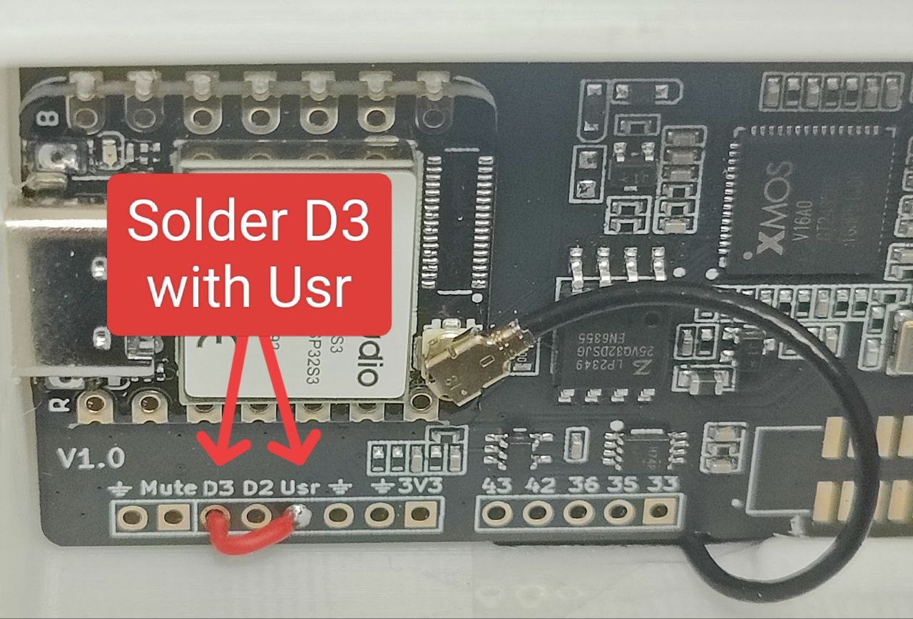
Usr button connectionImportant: Before proceeding with flashing the firmware, you’ll need to perform a small DIY step. You may have noticed two buttons on the device PCB: one button is a hardware microphone mute button, and the second is called as the “User Button.” By default, this User Button isn’t connected to the ESP32 controller, and you’ll need to manually connect it for functionality.
The User Button pin is marked as Usr on the PCB, and you can connect it to either of two nearby GPIO pins—D2 (GPIO3) or D3 (GPIO4). Initially, I connected the button to the nearest pin, D2, but since GPIO3 (D2) is an ESP32 bootstrap pin, every time I compiled the firmware, ESPHome generated a warning recommending against using it. To resolve this, I re-soldered the User Button connection from D2 to D3 and updated the firmware config accordingly, so I recommend you do the same and use D3 pin.
To complete this step, solder the Usr pin to D3 using a small piece of wire.
How to Flash the Firmware?
The firmware configuration is provided as an ESPHome framework configuration file (.yaml). Using this file, ESPHome compiles the final firmware binary. You can make your own modifications to the configuration (later, I’ll provide some recommended settings to tweak) and compile your custom firmware using the ESPHome add-on in Home Assistant, or you can simply use my pre-compiled binary as-is. Let’s walk through both firmware installation methods.
Option 1: Using the Pre-compiled Firmware
You can find my pre-compiled binary firmware on my Github here. If you don’t plan to modify the firmware at this stage, you can quickly flash this binary using the web-flasher tool directly from your browser.
First, connect a USB data cable to the USB-C port of the ESP32 module, but do not yet plug the other end into your computer.
Before connecting the other end of the USB cable to your PC or laptop, press and hold down the small button labeled “B” located next to the USB-C port on the device PCB. Holding this button activates firmware flashing mode. After connecting the cable to your computer, you can release the button.
Click “Connect” button located under this list, and you should see a list of one or more Serial (COM) ports.
If multiple ports appear, unplug and re-plug your USB cable to identify which port disappears and reappears—this is the port you’ll use.
If no ports are shown, ensure your USB cable supports data transfer and is not simply a charging-only cable. If the cable is correct but still no ports appear, you may need to install drivers. Follow the web-flasher instructions to install necessary drivers.
Select the COM port of your connected device, ensure the “Erase Data” checkbox is selected, and follow the instructions to start flashing.
Once the firmware flashing is complete, you might need to disconnect and reconnect the device power to reboot it.
After the initial reboot, your device won’t immediately connect to your Wi-Fi network, as it doesn’t yet have your Wi-Fi credentials. Instead, the device will start in Wi-Fi Hotspot mode:
Scan for Wi-Fi networks using your smartphone or computer, and you should find a network named “Respeaker-Lite Hotspot”.
Connect to it using the password “diycraic123!”.
Open your browser and navigate to http://192.168.4.1, select your home Wi-Fi network, enter the password, and save. The device will automatically reboot and should then connect to your Wi-Fi.
Web Flasher Tool
Connect
Important Note:
After the first successful connection to the internet,
an automatic firmware update for the XMOS XU316
audio chipset will likely begin. During this
time, you may see LED indicators flashing blue, and if
you have already connected a speaker or headphones, the
device may produce unusual sounds. This is
normal—do not disconnect the device from power
during this update, which typically takes about
10-30 seconds. If you encounter issues with automatic
update, you can manually update the audio firmware by
following the instructions provided by SeeedStudio here.
Use the firmware labeled respeaker_lite_i2s_dfu
_firmware_48k version v1.1.0 or
higher.
Option 2: Compiling and Flashing Firmware with ESPHome
If you’d prefer compiling the firmware yourself using the ESPHome Device Builder add-on for Home Assistant (perhaps making custom modifications), you can find a base configuration file on my GitHub repository here.
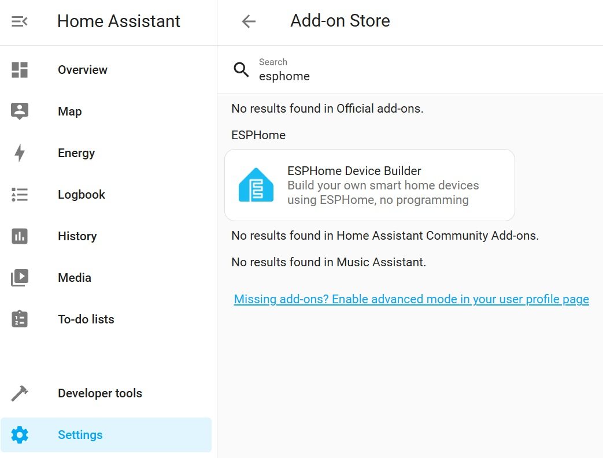
Find ESPHome add-on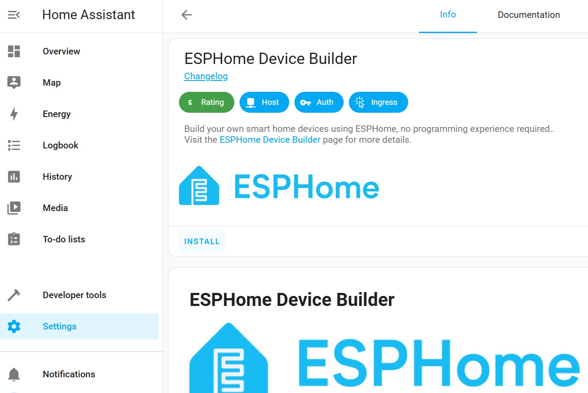
Click “INSTALL”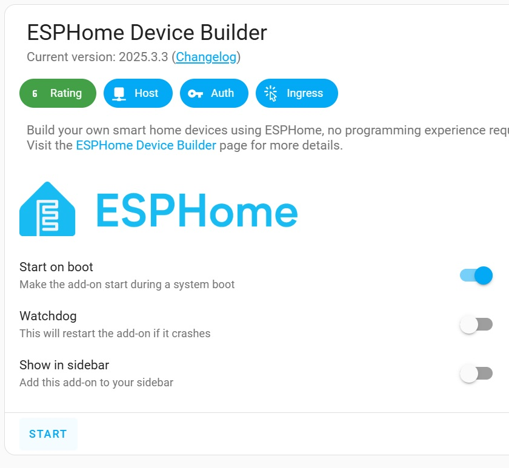
Click “START”Follow these steps to compile and flash the firmware onto your device using Home Assistant and the ESPHome add-on:
Install the ESPHome Device Builder add-on in Home Assistant and start it.
Open the ESPHome web interface by clicking “OPEN WEB UI”.
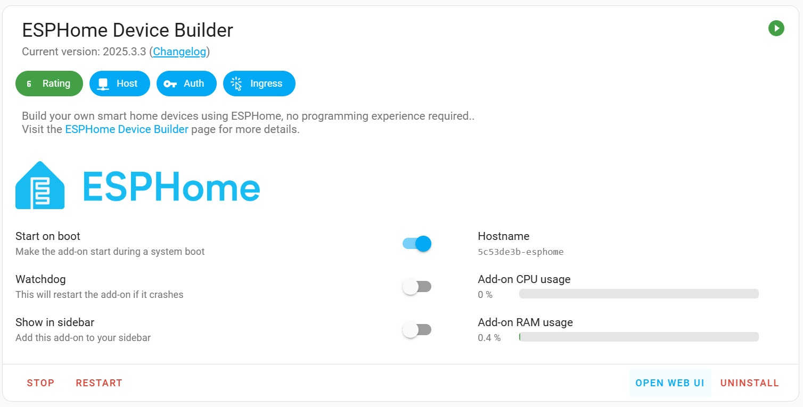
Click “OPEN WEB UI”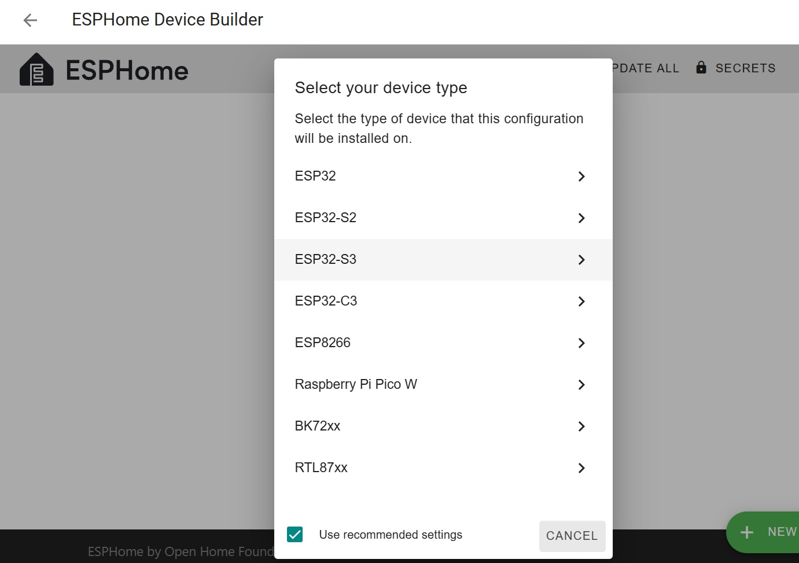
Add new device – ESP32-S3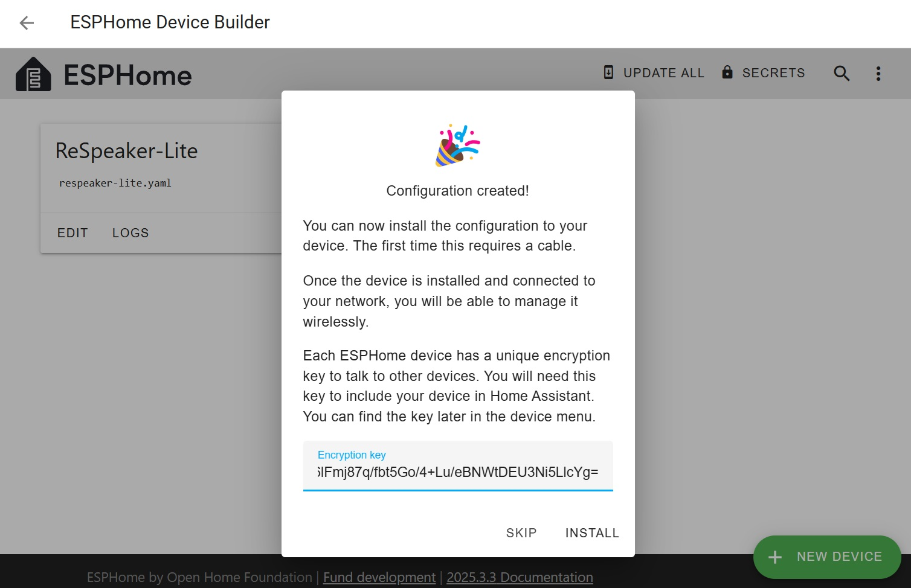
Click “SKIP” on this screen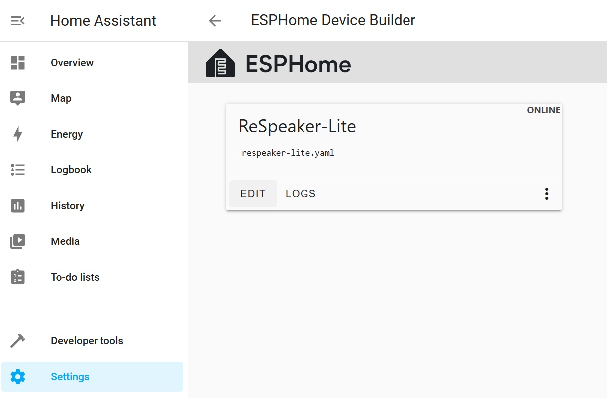
Click “EDIT” to edit the firmware codeAdd a new device by clicking the “+New Device” button.
Enter a desired name for your device.
Select the device type as ESP32-S3, then click “Skip”.
Edit your device configuration (click the “Edit” button) and replace its contents entirely with the configuration file from my GitHub repository.
Edit the secrets.yaml file (click “SECRETS” at the top-right corner of the web interface) and add your Wi-Fi credentials and OTA password. An example is available in the same GitHub repository. If you previously installed the pre-compiled firmware – use the OTA password from the repository.
After configuring these settings, click the “Install” button to start compiling and flashing the firmware.
Select Wireless installation (OTA) if the device was previously flashed with ESPHome firmware and is already connected to your network.
For the first-time flashing, select “Plug into this computer”, connect your device via USB cable, and activate the firmware flashing mode as described in the previous section.
Testing the Device
After successfully flashing the firmware onto your device, connect a speaker or headphones and say the wake word “OK Nabu”. The device should respond with an LED indication and an audible notification. If you observe this response, your device is working correctly, and you can move on to the next step—integrating it with Home Assistant.
Adjusting firmware config settings (optional)
You can experiment with the following ESPHome firmware config settings for optimal performance of your voice assistant:
micro_wake_word:
probability_cutoff: This parameter sets the confidence threshold for wake word detection.
Lower Values: Increase sensitivity, allowing the system to detect the wake word more easily, which can be beneficial if the wake word is not consistently recognized.
Higher Values: Reduce false positives by requiring higher confidence for detection, which is useful if the system is triggering unintentionally.
Default: Typically set around 0.8.
voice_assistant:
noise_suppression_level: Controls the level of background noise reduction.
Range: 0 (no suppression) to 3 (maximum suppression).
Recommendation: Start with level 1-2 for effective noise reduction without significant distortion.
auto_gain: Automatically adjusts the microphone gain to maintain consistent input levels.
Format: Specify in decibels relative to full scale (dBFS), e.g., 31dBFS.
Note: Helps in environments with varying ambient noise levels.
volume_multiplier: Amplifies the microphone input signal.
Usage: Increase if the input audio is too quiet; decrease if it’s too loud or distorted.
Example: A value of 2.0 doubles the input signal strength.
wifi:
output_power: Sets the Wi-Fi transmission power.
Range: 0.0 to 20.5 dBm.
Adjustment: If experiencing Wi-Fi connectivity issues, especially due to interference from nearby components like speaker, try reducing this value.
Example: Setting it to 12.0 dBm or lower can improve stability in certain setups.
Home Assistant Configuration
Adding the Device
After you’ve flashed your ReSpeaker-lite and connected it to the same local network as your Home Assistant server, Home Assistant should automatically detect it.
Navigate to Settings → Devices & Services.
In the Discovered section, you should see the newly detected device labeled “ReSpeaker-lite”. Click the “Add” button.
Choose “Full local processing” and click “Next”.
Home Assistant will install three new integrations:
Wyoming Protocol – the integration protocol enabling communication between Home Assistant and the voice processing engines.
Whisper – the Speech-to-Text engine.
Piper – the Text-to-Speech engine.
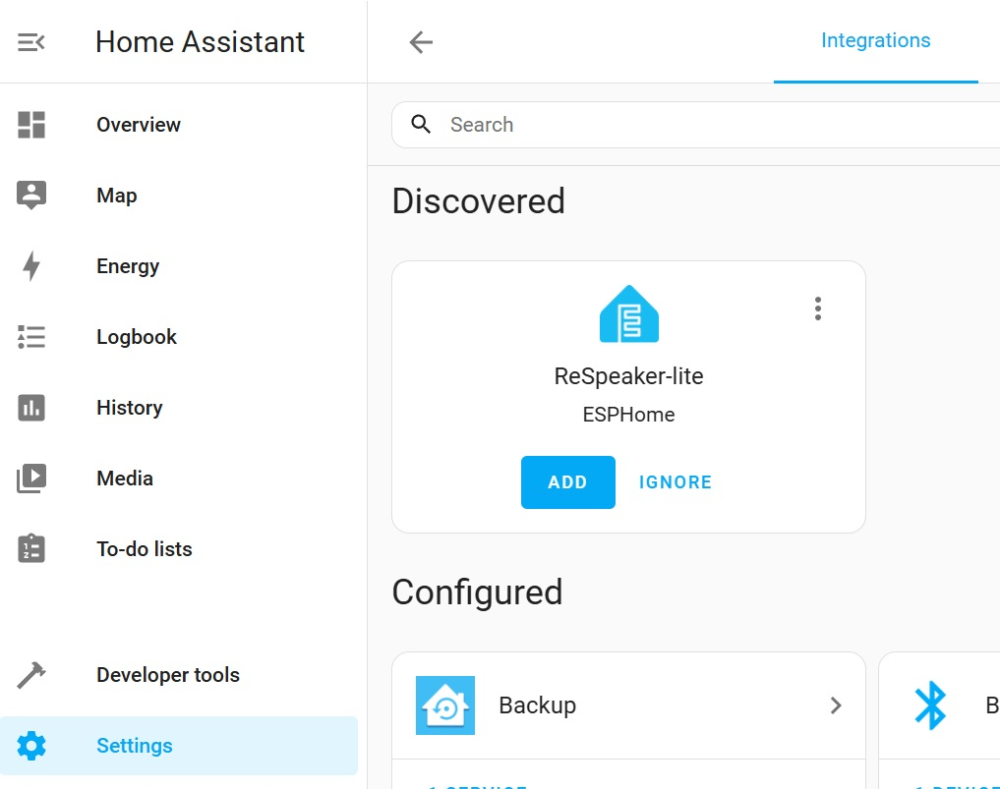
Add discovered device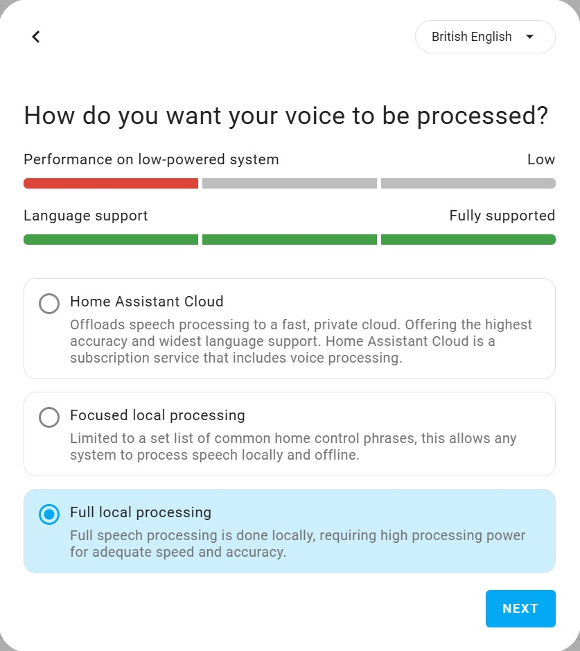
Select “Full local processing”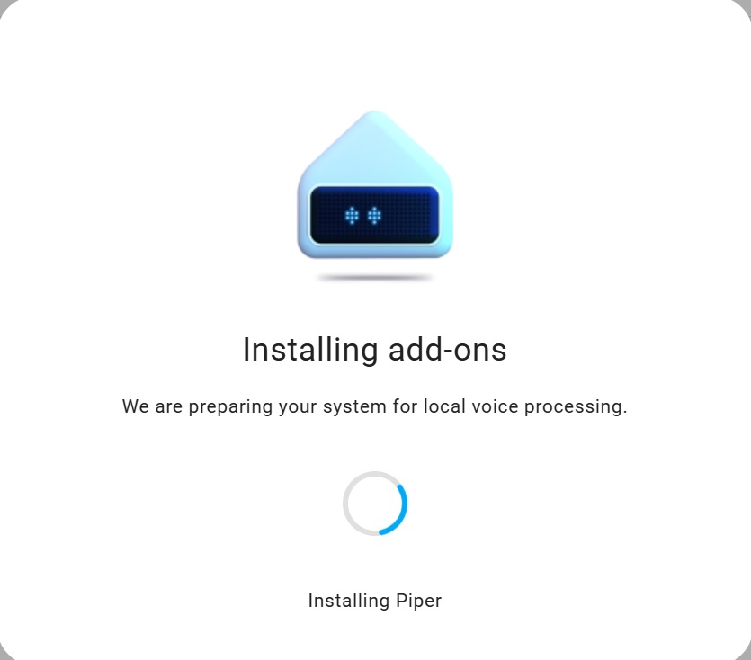
Installing add-ons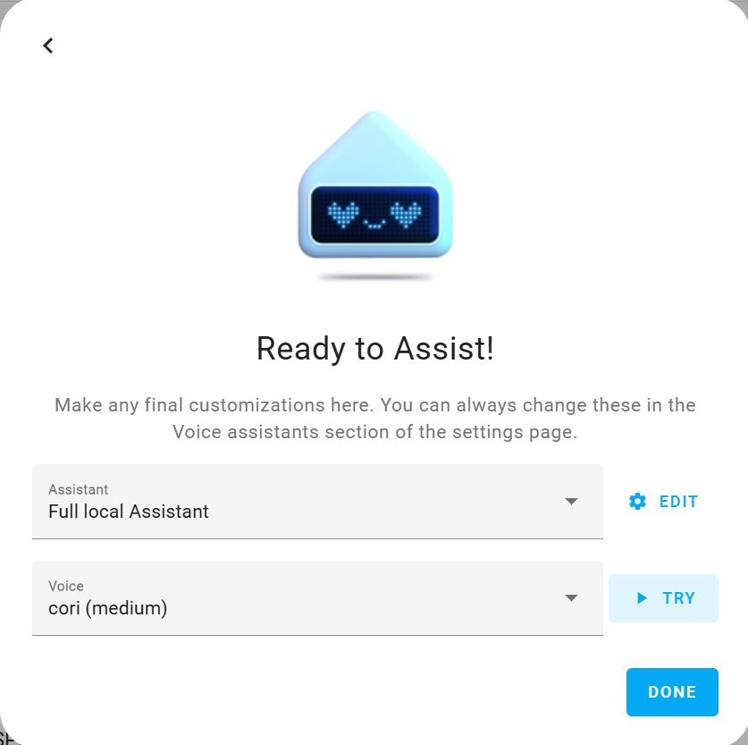
Click “DONE”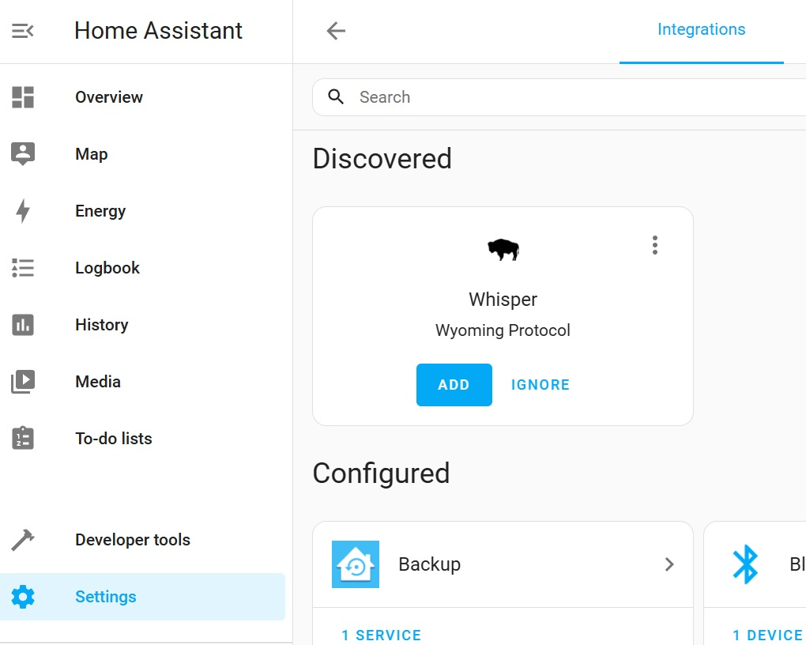
Add discovered “Whisper”Once the installation is complete, you should see Whisper discovered – click Add.
Go to Settings → Voice Assistants. Here you should see a newly created assistant named “Full Local Assistant”.
Select “Full Local Assistant” as the default voice assistant by clicking “Set as preferred” from the menu.
Clicking on “Full Local Assistant” will open the voice assistant configuration menu, allowing you to change language settings and select alternative Text-to-Speech and Speech-to-Text engines. For example, instead of Piper, I personally prefer using Google Translate Text-to-Speech, as I find its voice quality and pronunciation more pleasant.
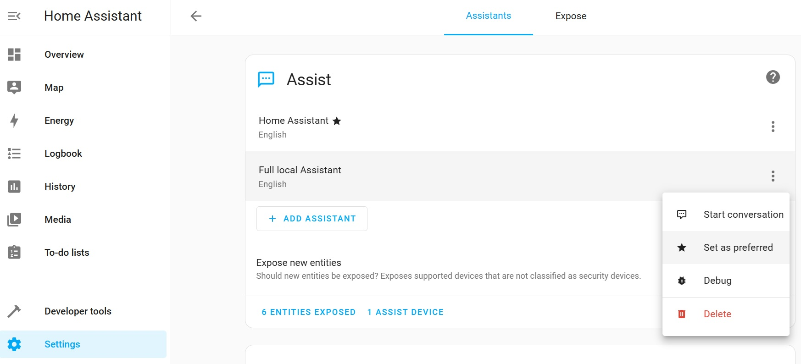
Set Full local Assistant as preferred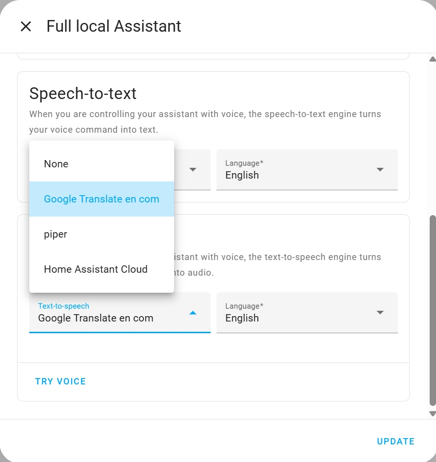
Select STT engine you likeUsing the Voice Assistant
Your voice assistant is now ready for use! For example, try asking, “What time is it?”. Remember to first say the wake word—by default, “Ok Nabu”—to activate listening mode. If you’d like, you can easily change this wake word later in your device’s settings within Home Assistant.
You can also control devices already integrated with Home Assistant using your voice. For instance, simply say, “Ok Nabu, turn on the lights in the kitchen,” provided you have a device named “lights” assigned to an area named “kitchen”.
To further enhance usability, you can add custom aliases to your devices in their settings. This helps the assistant correctly identify devices even when you refer to them using different names or phrases. Additionally, you can set up automations triggered by specific voice commands or automate voice notifications triggered by certain events.
I’m sure you already have some ideas about how you’d like to use your voice assistant. Personally, I have several automations set up to play different radio stations using the Radio Browser integration, as well as automations to play specific playlists stored on my local NAS using the Music Assistant Server add-on.
Improving Speech Recognition Accuracy and Speed
After testing the Whisper speech-to-text engine with its default configuration, I found that the accuracy and speed of local speech recognition on my home server—whether using a Raspberry Pi or an Intel N100—were unsatisfactory. If you’re using similar budget-friendly hardware or if your native language isn’t English, I recommend considering alternatives like Vosk, which may offer better performance in such scenarios.
However, if you have a more powerful home server and wish to experiment with Whisper, you can try tuning its settings to improve performance. Adjusting parameters such as language model and beam size can lead to better accuracy and responsiveness. Keep in mind that achieving optimal results may require iterative testing and fine-tuning based on your specific setup and requirements.
Tuning Whisper Speech-to-Text Engine
To adjust Whisper’s settings in Home Assistant:
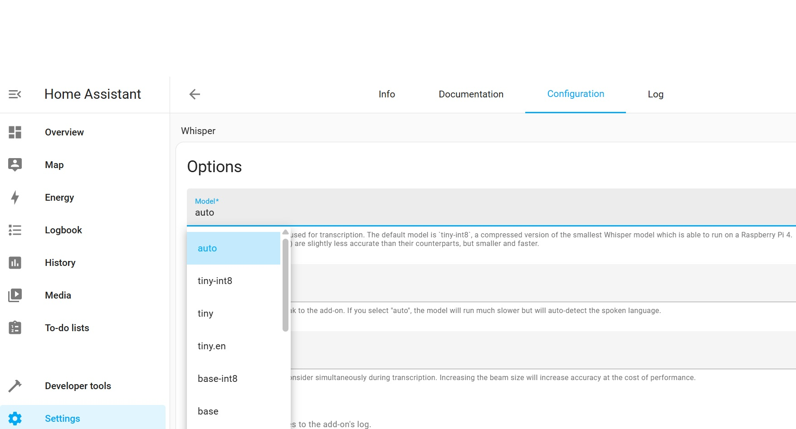
Whisper model optionsNavigate to Settings → Add-ons → Whisper → Configuration.
Modify the following parameters:
Language: Set this to your preferred language for recognition.
Model: Choose from various models based on your hardware capabilities:
tiny-int8: Fastest and most lightweight, suitable for devices with limited resources.
base, small, medium: Offer improved accuracy with increased resource requirements.
medium-int8: A quantized version of the medium model, balancing accuracy and performance.
Larger models generally provide better accuracy but require more RAM and processing power.
Beam Size: This parameter controls the number of alternative transcriptions considered during decoding.
A higher beam size can improve accuracy but will increase computational load and delay.
A beam size of 2 is often a good starting point for balancing performance and accuracy.
If you’re still unable to achieve satisfactory results after adjusting the configuration, I recommend switching to what I consider a much better alternative—Vosk, which I personally use.
Switching to the Vosk Speech-to-Text Engine
If you’re seeking a more efficient and lightweight alternative to Whisper for local speech recognition, especially on devices like Raspberry Pi or Intel N100, Vosk is an excellent choice.
What is Vosk?
Vosk is an open-source, offline speech recognition toolkit developed by Alpha Cephei. It supports over 20 languages and dialects, including English, Russian, German, French, Spanish, and more. Vosk is designed to run on various platforms, from servers to embedded devices like Raspberry Pi and Android. It offers real-time transcription with low latency and supports speaker identification.
How is Vosk Better Than Whisper?
Efficiency: Vosk is optimized for low-resource devices, making it suitable for Raspberry Pi and similar hardware.
Offline Capability: Vosk operates entirely offline, ensuring privacy and reducing dependency on internet connectivity.
Lightweight Models: Approximately 50MB in size, these models are optimized for devices with limited resources, such as Raspberry Pi or Android smartphones. They provide efficient performance with minimal storage and memory usage.
Large Server-Grade Models: For higher accuracy, Vosk provides larger models that, despite their increased size, offer much faster transcription speeds compared to Whisper’s large models.
Multilingual Support: Vosk provides pre-trained models for multiple languages, facilitating broader application.
Integrating Vosk with Home Assistant
To integrate Vosk into your Home Assistant setup:
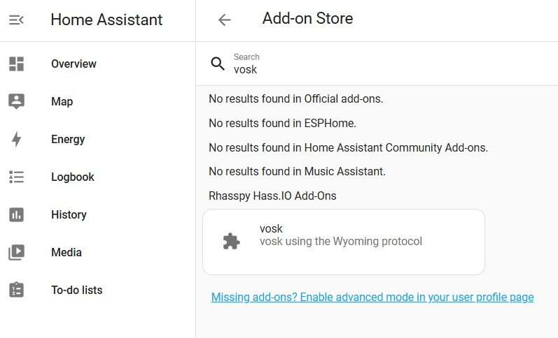
Search for “vosk”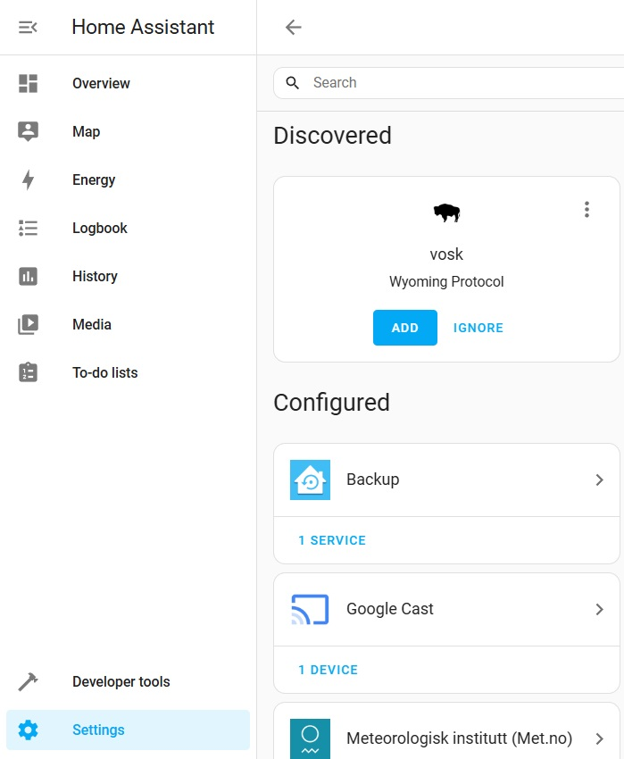
Add discovered VoskAdd the Vosk Add-on Repository:
Navigate to the Rhasspy Home Assistant Add-ons GitHub page.
Click on the appropriate button to add the repository to your Home Assistant.
Install the Vosk Add-on:
Go to Settings → Add-ons → Add-on Store.
Search for “Vosk” and select the Vosk add-on.
Click Install, then Start the add-on.
Optionally, enable the Watchdog to ensure the add-on stays running.
Configure Vosk:
Navigate to Settings → Add-ons → Vosk → Configuration.
Set the preload_language parameter to your desired language model (e.g., en-us for English, ru for Russian).
Add Vosk as a Service:
Go to Settings → Devices & Services.
Click Add Integration and select Vosk.
Follow the prompts to complete the setup.
Configure the Voice Assistant:
Navigate to Settings → Voice Assistants.
Select your assistant (e.g., “Full local Assistant”).
Under Speech-to-Text, choose Vosk.
Ensure the language settings match the model you selected earlier.
Click Update to apply the changes.
Test the Setup:
Activate your voice assistant using the wake word (e.g., “Ok Nabu”).
Issue a command, such as “What time is it?”
The assistant should respond appropriately, confirming that Vosk is functioning correctly.
Installing Larger Vosk Models
Installing larger Vosk models can significantly enhance speech recognition accuracy for Home Assistant voice assistant. These models, while more resource-intensive, offer improved performance, especially in diverse or noisy environments but they also require more memory (up to 16GB) due to their advanced AI algorithms. Vosk large models can process audio significantly quicker than Whisper’s models, even on CPU-only systems. Here’s how to set them up:
Select and Download a Suitable Model
Visit the Vosk Models page and choose a model that fits your language and accuracy requirements. For instance:
English:
vosk-model-en-us-0.22 (1.8GB)
vosk-model-en-us-0.42-gigaspeech (2.3GB)
German:
vosk-model-de-0.21 (1.9GB)
vosk-model-de-tuda-0.6-900k (4.4GB)
Spanish:
- vosk-model-es-0.42 (1.4GB)
Portuguese/Brazilian Portuguese:
Italian:
- vosk-model-it-0.22 (1.2GB)
Russian:
- vosk-model-ru-0.42 (1.8GB)
Ukrainian:
- vosk-model-uk-v3 (343Mb)
These models offer lower word error rates, enhancing recognition accuracy.
Memory Considerations for Larger Models
Larger Vosk models offer improved accuracy but require more system memory:
Small Models: Approximately 50MB in size, requiring about 300MB of RAM. Suitable for devices like Raspberry Pi.
Large Models: Ranging from 1.8GB to 4.4GB, these models can demand up to 16GB of RAM.
If your system has limited memory (e.g., 8GB RAM), loading large models might cause Home Assistant to crash or become unresponsive. In such cases, consider using smaller models to maintain system stability.
Prepare Home Assistant for Custom Vosk Model Integration
Since Home Assistant’s Vosk add-on doesn’t support automatic model downloads, you’ll need to manually place the model files:
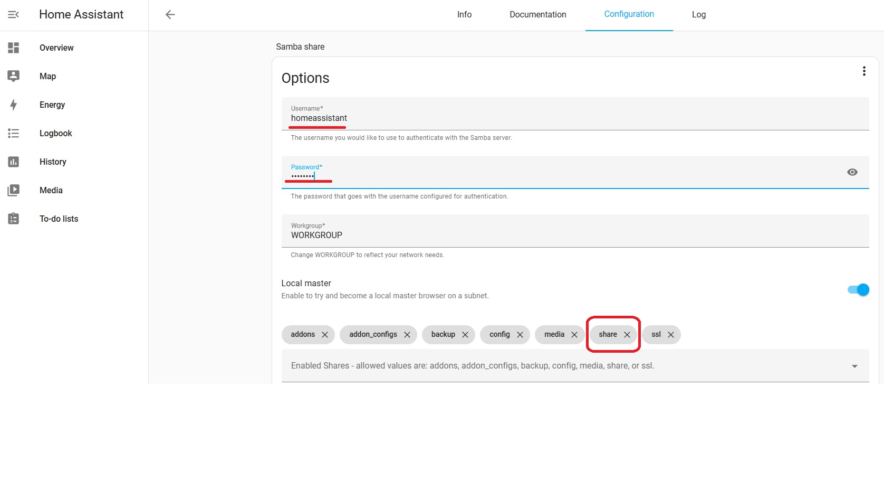
Samba SettingsInstall Samba Share Add-on:
Navigate to Settings > Add-ons > Add-on Store.
Search for “Samba share”, install it, and configure the username and password.
Ensure the share folder is accessible.
Access Home Assistant’s File System:
On your computer, open the file explorer and connect to \\homeassistant.local or use your Home Assistant’s IP address.
Log in using the credentials set earlier.
Integrate the Downloaded Model
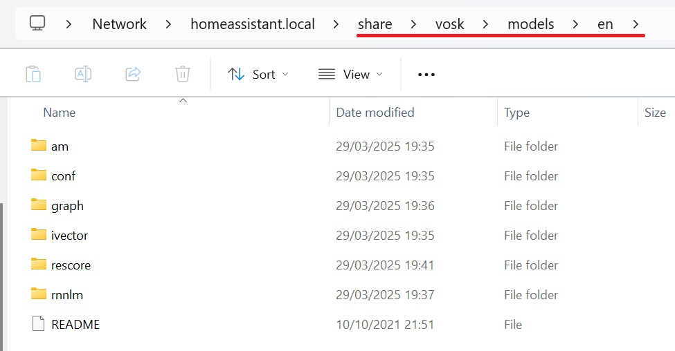
Vosk models location pathCreate the directory path: share/vosk/models/ <language_code> (e.g., share/vosk/models/en).
Extract the downloaded model archive and place its contents into the newly created folder.
Configure the Vosk Add-on in Home Assistant
Go to Settings > Add-ons > Vosk > Configuration.
Set the Preload Language to match your model’s language code (e.g., en for English).
Restart the Vosk add-on to apply changes.
Update the Voice Assistant Settings
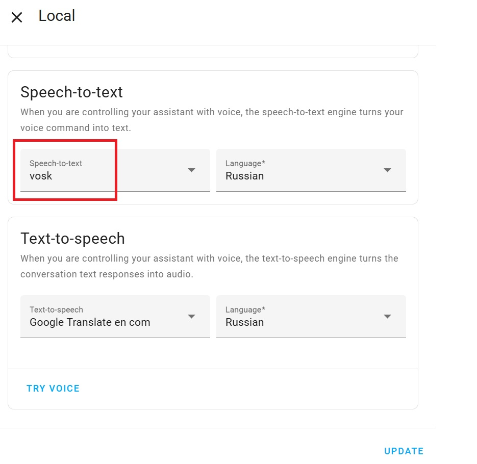
Select Vosk as STTNavigate to Settings > Voice Assistants > Full Local Assistant.
In the Speech-to-Text section, select Vosk.
Ensure the language settings align with your chosen model.
Click Update to save the configuration.
Fine tuning Vosk model
To enhance the speech recognition accuracy of the
Vosk model, we can also fine-tune specific parameters in
the model.conf file located at:
\\homeassistant.local\share\vosk\
models{LANGUAGE}\conf\model.conf
Open this file with a text editor to adjust the
parameters.
Key Parameters in model.conf
Adjusting these parameters can help you achieve a better balance between recognition accuracy and system performance. It’s advisable to experiment with these settings incrementally to observe their impact on your specific setup.
--min-active
Purpose: Sets the minimum number of active hypotheses during decoding.
Effect: Higher values can improve accuracy but may increase computational load.
Recommendation: Leave at --min-active=200.
--max-active
Purpose: Defines the maximum number of active hypotheses.
Effect: Larger values allow for more hypotheses, potentially improving accuracy at the cost of performance.
Recommendation: Try --max-active=15000 or 20000. Allows more hypotheses to be considered. Helps in noisy environments or complex phrases.
Cost: A bit more RAM and CPU, but manageable.
--beam
Purpose: Controls the pruning beam width during decoding.
Effect: Larger beam widths can increase accuracy but also computational requirements.
Recommendation: Try --beam=18.0 or 20.0. A slightly wider beam lets the decoder explore more alternatives, improving recognition accuracy—especially for harder words or accents.
Cost: Slightly more CPU usage; minimal impact if increase is small.
--lattice-beam
Purpose: Determines the beam width for lattice generation.
Effect: Affects the richness of the generated lattices, influencing downstream processes like confidence scoring.
Recommendation: Try --lattice-beam=10.0 or 12.0. Keeps more alternatives for confidence scoring and can improve accuracy for post-processing (e.g., rescoring).
Cost: Slight increase in memory/processing during lattice generation.
--acoustic-scale
Purpose: Scales the acoustic model scores.
Effect: Adjusting this can balance the influence between acoustic and language models.
Recommendation: Keep at --acoustic-scale=1.0 unless specific tuning is required.
--frame-subsampling-factor
Purpose: Specifies the frame subsampling factor used during feature extraction.
Effect: Lower values can improve accuracy but increase computational load.
Recommendation: Keep at 3, or try: 2 (if your model supports it). Lower subsampling means more frequent acoustic analysis (more accurate).
Cost: Significantly higher CPU usage. Only try lowering this if you really need better accuracy and can afford slower performance.
Example model.conf Configuration
Below is example of my configuration I currently use on my Intel N100 based home server.
--min-active=200
--max-active=12000
--beam=20.0
--lattice-beam=10.0
--acoustic-scale=1.0
--frame-subsampling-factor=3
If you have a faster CPU, you can try increasing some of the settings even further to achieve better speech recognition accuracy. However, keep in mind the trade-offs, such as reduced speed. Aim to find the optimal balance between speed and accuracy for your specific hardware setup.
Update — April 2026: I’m Now Using ONNX ASR Models only
One day, I tried running ONNX ASR models, and since then I have used them exclusively for speech recognition. So what are they? When you see “ONNX ASR”, it usually means that a speech-to-text model has been converted to the .onnx format and can be run using ONNX Runtime, instead of the original training framework such as PyTorch or TensorFlow. Why people use ONNX for ASR (Automatic Speech Recognition):
Portability: the same model can run on different platforms.
Performance: ONNX Runtime is much faster and lighter than running full PyTorch.
Edge/device use: useful on Raspberry Pi, mini PCs, Android, embedded devices, etc.
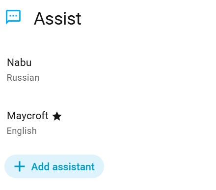
2 voice assistants in HAHere are some useful links that will help you set up an ONNX ASR server as a Home Assistant add-on or as a Docker container:
Wyoming Onnx ASR server (docker container)
Wyoming STT Server with HomeAssistant addon (mostly aimed at Russian-speaking users)
I currently use both and have two voice assistants in my Home Assistant setup with different languages running at the same time: I ask Mycroft in English and Nabu in Russian.
Integrating AI Chatbot
If you’ve reached this point, you’ve likely successfully configured your Home Assistant Voice Assistant to control smart devices, automations, notifications, and more. While these functionalities are impressive, platforms like Google Home or Amazon Echo offer conversational capabilities, answering general knowledge questions, telling jokes, or solving problems. We can achieve similar functionality by integrating AI chatbots such as ChatGPT, Gemini, DeepSeek, Llama, and others into our Home Assistant setup. There are two primary methods to accomplish this: using an API (paid or free) or hosting a Large Language Model (LLM) locally on your home server. Let’s explore the advantages and disadvantages of each approach.
Using an API (e.g., OpenAI, Google Gemini)
Advantages:
High Performance and Accuracy: Cloud-based models like ChatGPT and Gemini are trained on vast datasets, offering advanced reasoning and understanding capabilities.
Ease of Integration: Home Assistant provides built-in integrations for OpenAI and Google Generative AI, simplifying the setup process.
No Local Resource Requirements: Offloading processing to the cloud means your local hardware isn’t burdened, making it suitable for devices with limited resources.
Disadvantages:
Privacy Concerns: Your data (in text form after STT recognition) is transmitted to external servers, which may raise privacy issues.
Potential Costs: While some services offer free tiers, extensive usage may incur costs, especially with premium models.
Internet Dependency: A stable internet connection is required; outages can disrupt functionality.
Hosting a Local LLM (e.g., LLaMA, Mistral, DeepSeek)
Advantages:
Enhanced Privacy: All data processing occurs locally, ensuring your data remains within your home network.
No Ongoing Costs: Once set up, there are no subscription fees or usage charges.
Customization: You have full control over the model, allowing for fine-tuning and customization to suit your specific needs.
Disadvantages:
Hardware Requirements: Running large models locally demands significant computational resources, including high RAM and GPU capabilities.
Complex Setup: Installing and configuring local models can be technically challenging and time-consuming.
Maintenance: Ongoing updates and optimizations are your responsibility, requiring continual attention.
Home Assistant supports both integration methods. For cloud-based solutions, you can utilize built-in integrations for OpenAI and Google Generative AI. For local hosting, tools like Ollama facilitate running models such as DeepSeek, LLaMA 3, Mistral, etc. on your hardware. Check out my recent guide on how to host an Ollama server locally. You can connect it to Home Assistant using the Ollama integration.
What I use
While my Intel N100-based home server is capable of running some distilled LLM models (as I described in this guide), it can’t achieve the near real-time processing speed needed for a smooth Voice Assistant experience. So, I decided to use the Gemini API as the conversation agent because it’s easy to integrate and offers a free tier, which is more than sufficient for a Voice Assistant. It also works quite well with different languages.
How to Set Up the Gemini Conversation Agent:
Add the Google Generative AI integration in Home Assistant.
Follow the instructions to generate an API key and add it.
Click “CONFIGURE”.
Adjust the “Instructions” prompt if needed.
Make sure “Assist” is enabled under “Control Home Assistant”.
Check “Recommended model settings” to use a default model or uncheck to choose a specific model and select a model with a free tier available.
You can view the full list here.Click “Submit” to save your changes.
Go to Settings → Voice Assistants → Full Local Assistant Settings.
- Set Conversation Agent to Google Generative AI, then click “Update”.
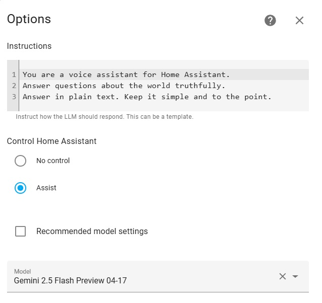
Google Generative AI settings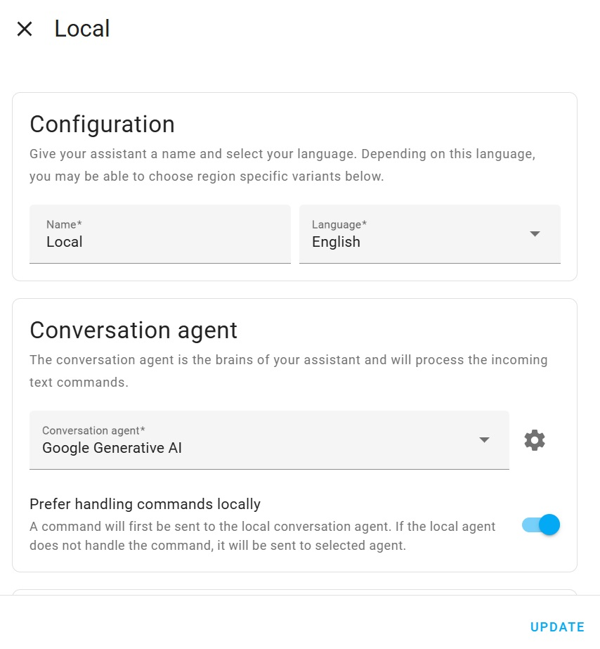
Select Google Generative AI as conversation agentThat’s it! Now you can ask your Voice Assistant random questions, and it should respond just like a Google Home or Amazon Echo. You’ll still be able to control your smart home devices—and now you can also have more natural, open-ended conversations with your assistant! If you’re happy with the functionality, we can move on to 3D printing the device enclosure and assembling everything into a complete, polished-looking device.
Assembling the “Brick Assistant” Enclosure
As I mentioned earlier, I named the device “Brick Assistant” because of the square shape of its enclosure, which I designed to be easy to 3D print and assemble, while still being compact and convenient to use—with all ports easily accessible. (Previously, I used a similar 3D-printed enclosure design in another project—my Smart CO2 Gadget—and found it quite convenient. You can check out that project here)
To improve voice capture, I positioned the microphones horizontally and added parabolically shaped openings. For better sound quality, I made the speaker bay fully sealed and added two passive radiators with a combined surface area about twice that of the main speaker driver (for 2.0 inch version), following general acoustic recommendations.
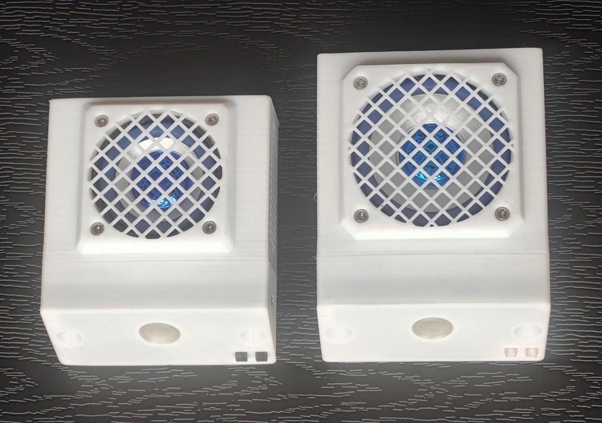
2.0 inch vs 2.5 inch Speaker Models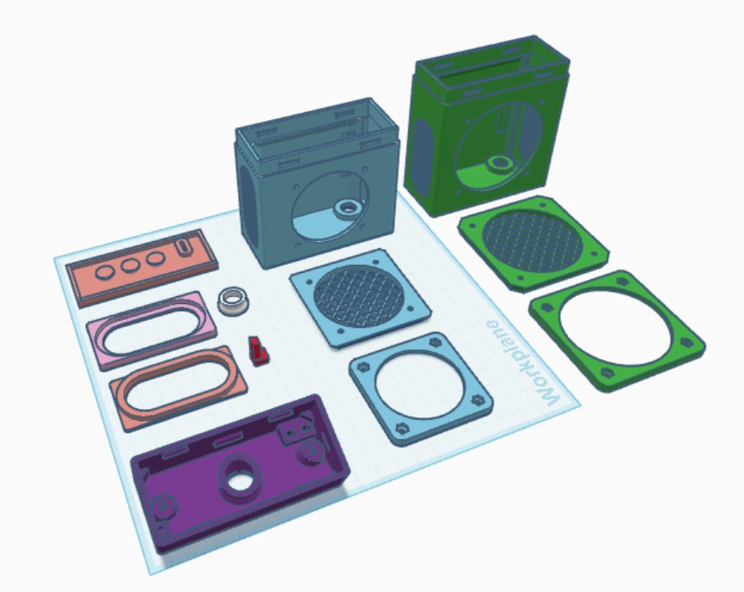
3D Parts (Blue – 2.0 inch, Green – 2.5 inch)I’ve already assembled two of these devices for my smart home. Initially, I used a 2-inch, 5W speaker and designed a 3D-printed case specifically for that speaker size. However, for the second version, I decided to use a larger 2.5-inch speaker with the same power rating, and I actually prefer this option—the sound quality feels a bit better. I’ve decided to provide both sets of case parts so you can choose which version works best for you. The only differences are in three parts: the section of the case that holds the speaker, the top speaker grille, and the bottom plate that secures the speaker with screws and nuts. The rest of the parts are the same for both versions. In the screenshot below, the parts for the 2.0-inch speaker are highlighted in blue, and the parts for the 2.5-inch speaker are highlighted in green.
Printing the Enclosure Parts
The 3D models for the enclosure parts are available on Tinkercad. I used PETG filament for printing, but ABS, ASA, etc. should also work fine. PLA might be too brittle during assembly, though you can give it a try if you don’t have other options. To print the LED lens, I used transparent plastic, but you can also use white PETG plastic—especially if you’re printing the other parts in a darker color.
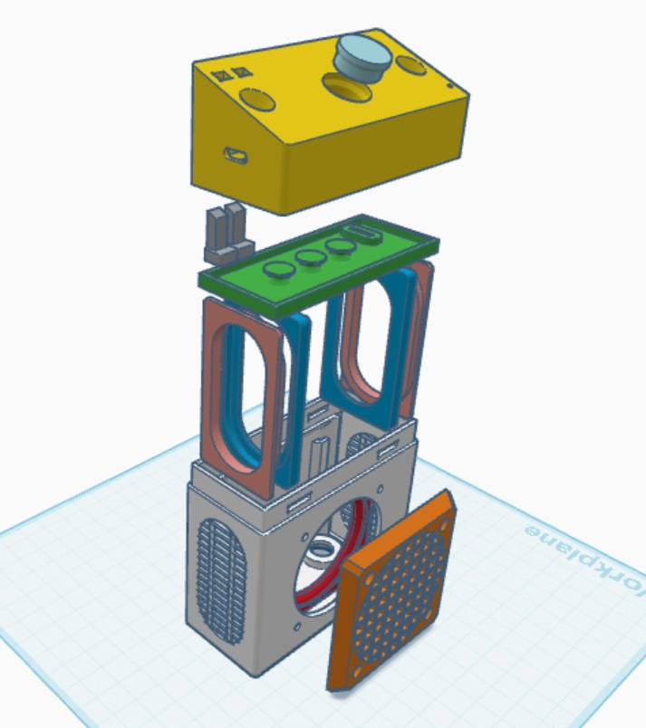
The device parts schemePrint the parts one by one using the following settings (I use Cura slicer):
Supports: Not needed—make sure to disable them for all parts.
Initial layer height: 0.3 mm
Layer height: 0.2 mm
Infill: 20%
Initial layer flow: 115% (to eliminate potential gaps in the first layer)
Layer flow: 100%
Build plate adhesion: Use Skirt. If you experience warping, try Brim instead.
Optional: Enable Use Adaptive Layers only for the part that holds the PCB, to make the surface smoother.
Seam position: Make sure to position the seam of the two main parts so that it faces the bottom of the device for a cleaner final appearance.
Feel free to adjust the other settings depending on your printer and filament quality.
Assembly Process
Assembling the Passive
Radiators:
To assemble the passive radiators, place the radiator
membrane between the two 3D-printed membrane holder
parts and snap them together. Start with the base part,
then position the membrane facing up, and firmly attach
the top part. Check the pictures below to ensure you
have the correct assembly order—if the parts are put
together incorrectly, the membrane may not have enough
space to move.
Passive radiator assembly
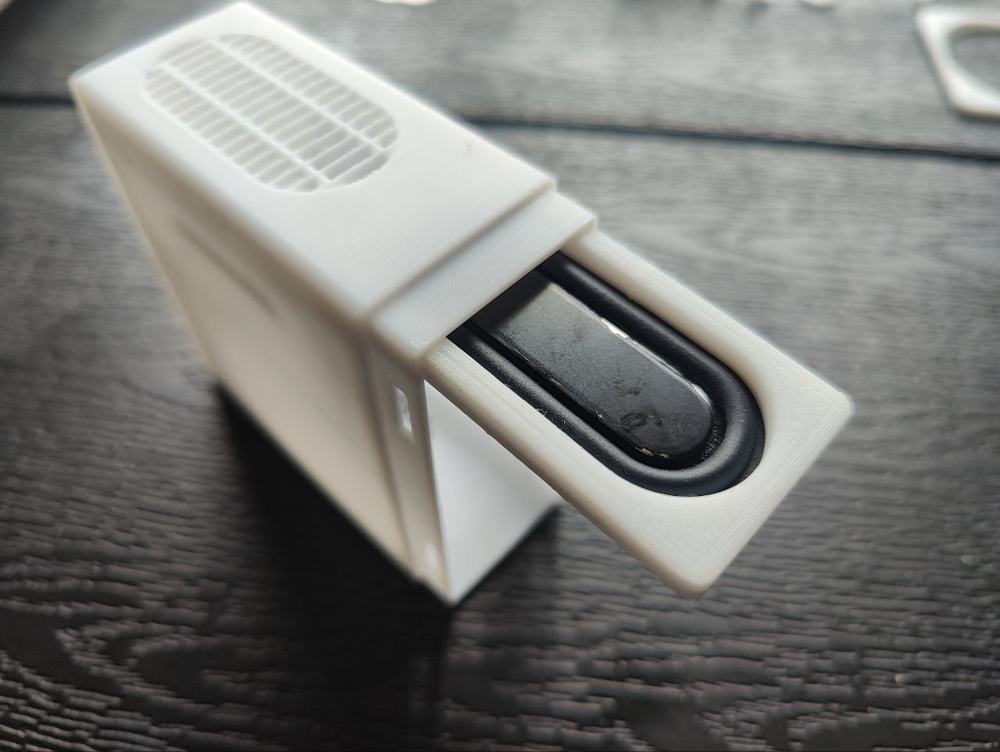
Inserting a passive radiator in it’s slotNext, insert the membrane holder (with the membrane inside) into the side slot of the device body. Use some pressure to fully push the holder into the slot. If it feels too tight, lightly sand the membrane holder parts with fine sandpaper. Repeat these steps for the second passive radiator.
Adding a USB port on the back
(optional):
You can power the device using either of the two USB-C
ports already present on the sides of the ReSpeaker Lite
PCB. However, for a cleaner look, I decided to add an
extra USB-C port on the back of the case and use that
instead. To do this, solder a wire with a JST2.0 female
connector to the corresponding power contacts on the
device’s PCB, then connect it to the JST2.0 male
connector from the USB-C socket installed on the back of
the case.
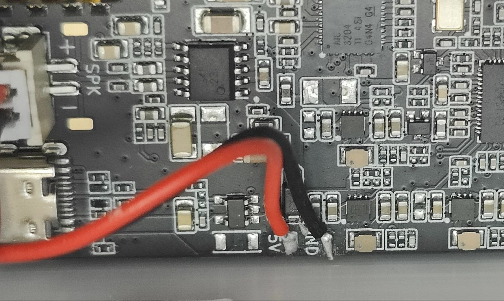
5v Power Terminal Connection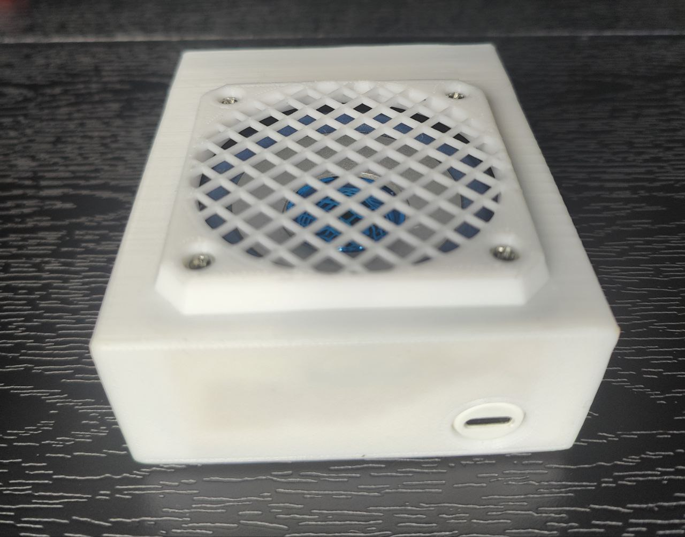
Back of the device with added USB-C port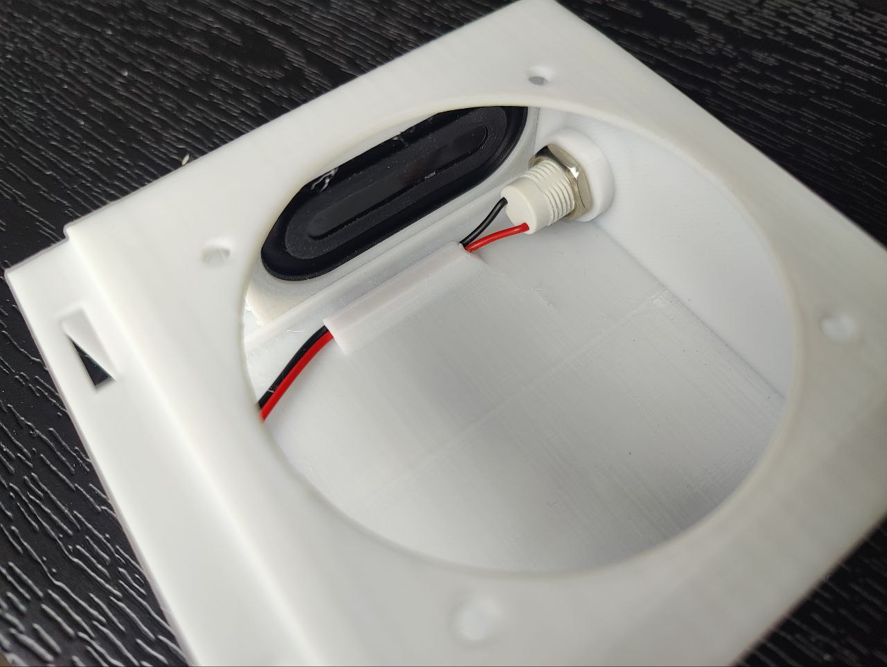
USB-C socket is secured with nut insideMake sure to double-check the polarity before connecting power to the additional socket—otherwise, you risk damaging the ReSpeaker board. If the integrated USB ports are enough for you, you can simply edit the rear case part to remove the hole for the extra USB-C socket.
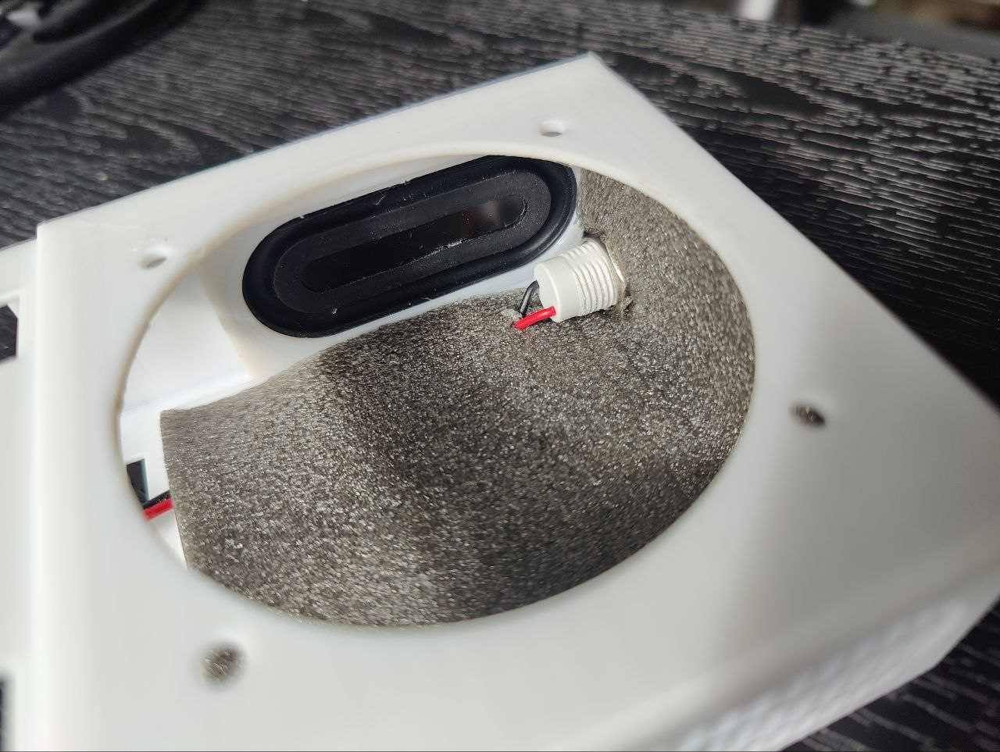
Optional Sound Insulation LayerAdding Sound Insulation Inside the Speaker
Bay (Optional):
This step is completely optional. I decided to add some
sound insulation inside the speaker bay because I
thought it might improve the sound quality, but I can’t
say for sure since I didn’t do extensive testing—so it’s
entirely up to you whether to do this or not. I used a
piece of 3mm laminate underlay that was left over from
installing flooring in my house, and I glued it to the
bottom, rear wall, and the lid that seals the speaker
bay. You can use any similar soft material if you feel
it’s worth trying.
Connecting the Speaker:
To connect the speaker, solder the wires from the JST2.0
connector to the speaker terminals. Make sure to match
the polarity: the “+” and “–” are marked on both the
ReSpeaker PCB speaker socket and on the speaker
itself.
Installing the Speaker Driver:
To install the speaker, place
it inside the speaker bay so it fits
into the speaker hole. Attach the nut holder part from
the bottom, then screw it together with the top grille
using M3 screws and nuts. For convenience, you can
insert the nuts into the bottom holder part in advance
adding some glue for extra security if needed.
Sealing the Speaker Bay:
To seal the speaker bay, use the 3D-printed lid. It has
a hole for the speaker and power wires, but you’ll
notice the connectors won’t fit through the hole. What I
did was remove the connector pins from the plugs, feed
the wires through the hole in the lid, and then reattach
the pins to the connectors. You can use a small
screwdriver or a needle to release the pins from the
connector. After that, close the bay with the lid and
seal the wire hole with hot glue (or any other
silicone-based adhesive). I also added some glue around
the edge of the lid to secure it in place.
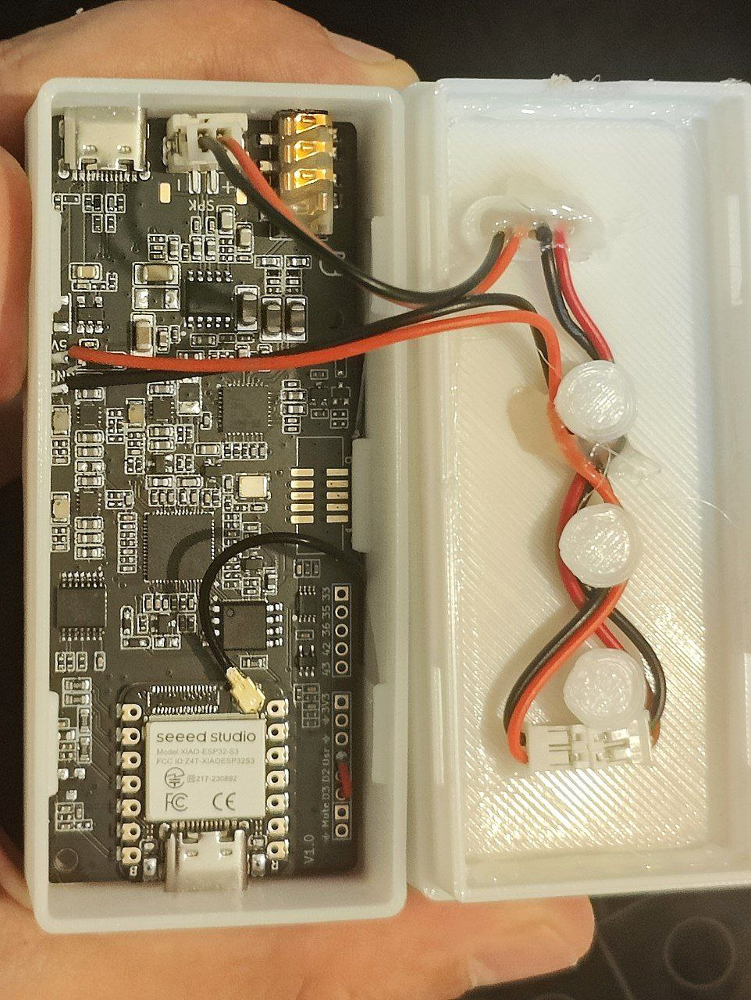
Ready to snap 2 main parts togetherPlacing the ReSpeaker Lite
PCB:
Before placing the PCB into its slot in the
corresponding 3D-printed case part, first secure the
WiFi antenna to the inside bottom of the part (see the
picture). The antenna has a self-adhesive backing if you
remove the protective film, but I also added a few drops
of multipurpose glue for extra security.
Next, don’t forget to insert the two 3D-printed buttons into their slots—they should move freely. If they’re too tight, use fine sandpaper or a file to adjust them. When installing the PCB, make sure the WiFi antenna wire is positioned so it will stick out between the PCB and the case wall.
I also recommend snapping the LED lens into place before installing the PCB. If you need to adjust or remove it later, it will be more difficult once the PCB is installed.
To install the PCB, start by inserting the side with the 3.5mm audio jack and USB-C port into the corresponding holes in the case wall. Then, while gently spreading the other three case walls with your fingers, carefully push the PCB into place until the opposite USB-C port snaps into the hole on the other side. Be careful not to use too much force, as the PCB should snap in easily if the walls are spread enough. Using PETG filament for the case can help, as it is more flexible than other plastics.
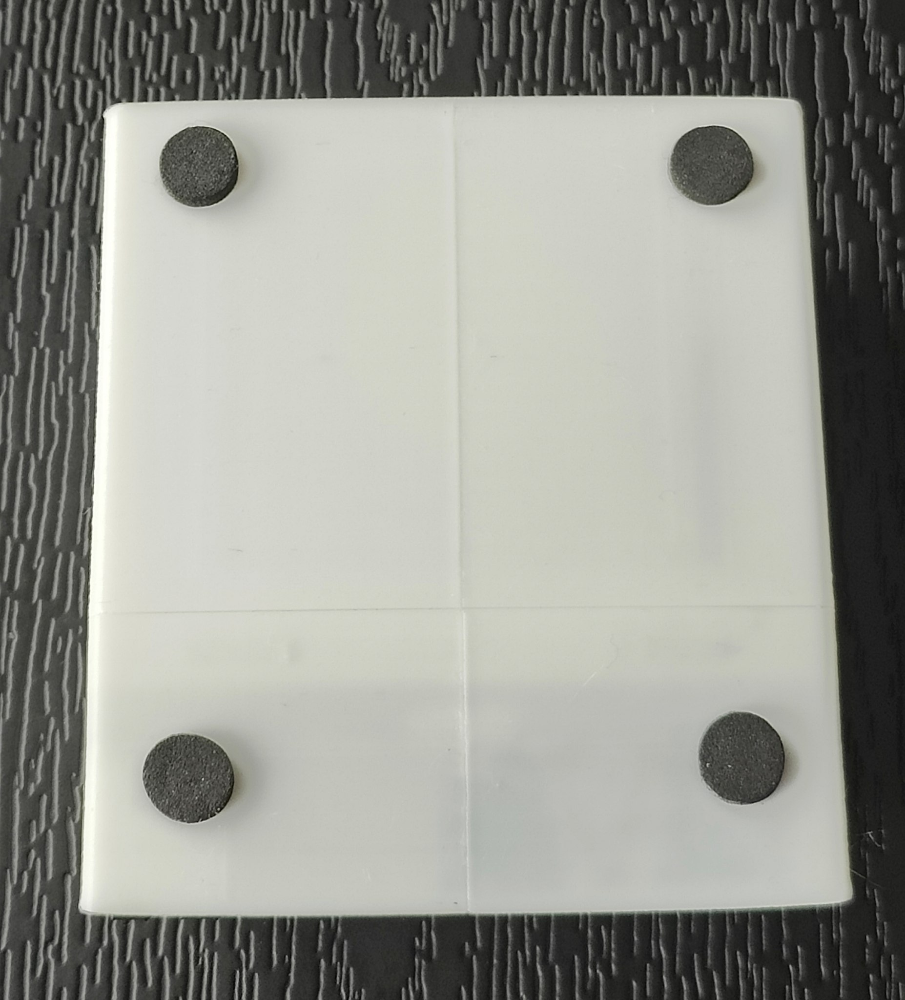
Rubber feet addedOnce the PCB is in place, check that the buttons click properly and that the microphone holes in the PCB line up with the openings on the front panel. Finally, connect the WiFi antenna cable to the PCB port.
Putting It All Together:
Once the speaker bay is sealed, the PCB is installed in
the front panel, and the power and speaker wires are
connected, you can tuck any excess wire between the
cones on the speaker bay lid and add a drop of hot glue
to keep them in place if needed.
After that, simply snap the front panel onto the speaker
bay part.
Icing on the Cake:
As a finishing touch, I added four soft pads (feet) to
the bottom of the device case. These help dampen any
vibrations that could occur if you place the plastic
case with the speaker directly on a desk. I repurposed
the soft pads from disposable vapes, where they’re used
to insulate battery terminals, but you can use any
similar material or rubber feet for this purpose.